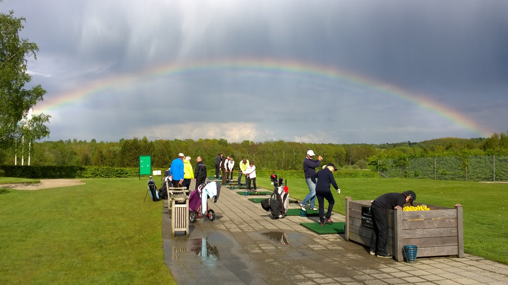
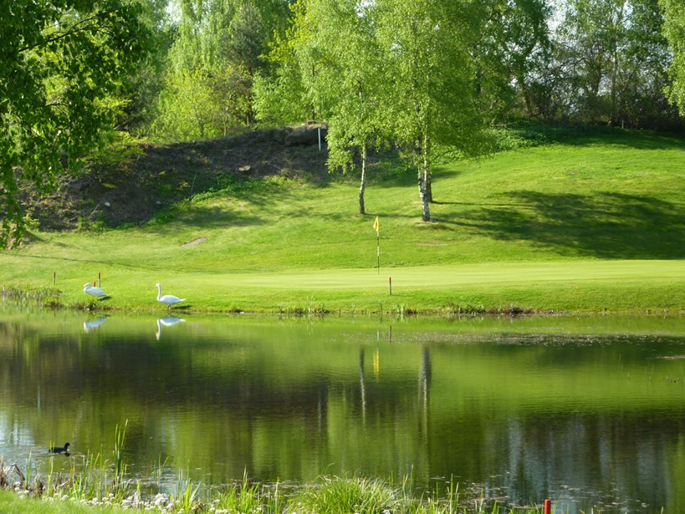

<div class="pages">
  <div data-page="the-club" class="page navbar-fixed toolbar-fixed" >
    <div class="navbar">
      <div class="navbar-inner">
        <div class="left">
          <a href="#" class="link back icon-only"><i class="icon icon-back"></i></a>
          <!-- <a href="#" class="back link icon-only"><i class="icon icon-back"></i></a> -->
        </div>
        <div class="center">Klubben</div>
        <!-- <div class="right"></div> -->
        <div class="right">
        </div>
      </div>
    </div>
    <div class="page-content" style="padding-top:45px;">
       <div class="content-block">
          <p>Hornbæk Golfklub og dets baneanlæg ejes 100% af medlemmerne, og du er som medlem således medejer af klubben, dog uden at hæfte for klubbens gæld. Dit ansvar er begrænset til betaling af indskud og kontingent.</p>
        </div>
        <div class="content-block">
          <center></center>
        </div>
        <div class="content-block" style="margin-bottom:0px;">
          <p>Klubben blev stiftet 18. februar 1989 af en række initiativrige borgere i Hornbæk, som mente, at etableringen af en golfklub og golfbane i Hornbæk, ville være endnu et aktiv for vort lokalområde. Hornbæk Golfklub er fuldgyldigt medlem af Dansk Golf Union som medlemsklub nr. 67.</p>
          <p>Endvidere er Hornbæk Golfklub medlem af paraplyorganisationen Hornbæk Idrætsforening, hvor vi i 1999 er blevet den største af de mange underafdelinger.</p>
          <p>9 Huller</p>
        </div>
        <div class="content-block" style="margin-top:0px;">
          <center></center>
        </div>
        <div class="content-block">
          <p>Medlemmerne har siden stiftelsen spillet på Passebækgaard - Gilleleje Golfklubs gamle bane, men kunne 4. juli 1998 indvie de første 9 huller af banen i Bøtterup.</p>
          <p>Jordarealerne blev erhvervet i 1997, og anlægsarbejdet på de første 9 huller var tilendebragt i september 1997.</p>
          <p>Efter at have oplevet en særdeles positiv udvikling i medlemstallet gennem 1998, besluttede bestyrelsen i foråret 1999 at anlægge de sidste 9 huller over sommeren 1999. Indvielse af de i alt 18 huller samt det nye klubhus fandt sted ved et storstilet arrangement den 15. juli 2000.</p>
          <p>Klubben overtog i 2013 gården Lærkeager, hvor der nu er anlagt en super par-3 bane, der er åben hele året. Alle opfordres til at gå et par runder på den, teste det korte spil og putte på de fantastiske greens. På Lærkeager findes der også mulighed for indendørs vintertræning i hallen.</p>
          <p>Siden 2001 har klubben investeret i en fortsat udbygning og forbedring af vores faciliteter, herunder baderum, sekretariat, edb-system, 1. sal på klubhuset, driving range, øveområde til indspil samt en række mindre forbedringer af banen. Dette arbejde vil fortsætte i takt med at behovene opstår, og økonomien tillader det.</p>
          <p>Klubben har p.t. plads til flere medlemmer – både helt nye golfspillere og spillere, der har været medlem andre steder. For nye golfspillere tilrettelægges strukturerede forløb, der sikrer et fundament både praktisk og teoretisk inden man tager stilling til, om golf skal være en del af livet fremover.</p>
        </div>
    </div>
    </div>
    </div>
  </div>
</div>
